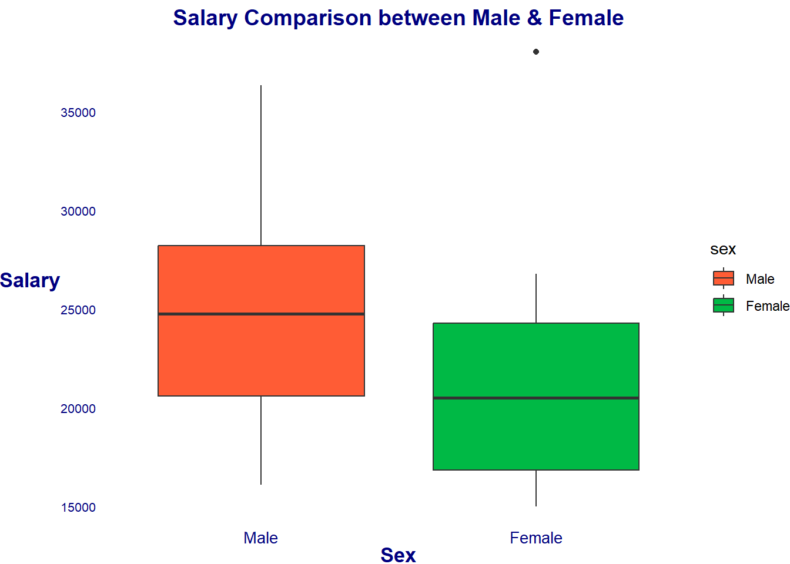
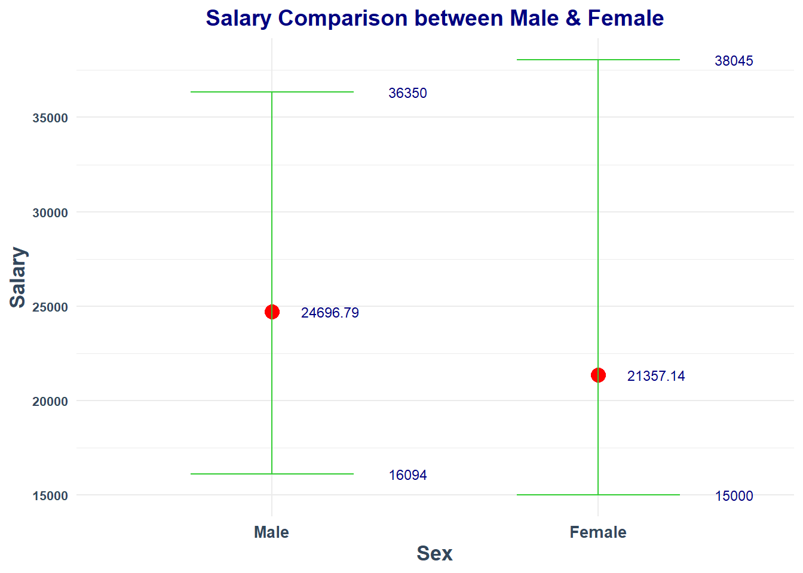

Loading required package: car
Loading required package: carData
Attaching package: 'car'
The following object is masked from 'package:dplyr':
recode
The following object is masked from 'package:purrr':
some
Loading required package: effects
lattice theme set by effectsTheme()
See ?effectsTheme for details.
Code
library(smss)library(kableExtra)
Attaching package: 'kableExtra'
The following object is masked from 'package:dplyr':
group_rows
Code
knitr::opts_chunk$set(echo =TRUE)
Question 1
For recent data in Jacksonville, Florida, on y = selling price of home (in dollars), x1 = size of home (in square feet), and x2 = lot size (in square feet), the prediction equation is ŷ = −10,536 + (53.8 * x1) + (2.84* x2).
A
A particular home of 1240 square feet on a lot of 18,000 square feet sold for $145,000. Find the predicted selling price and the residual, and interpret.
Based on the given data, the prediction equation suggests that a home with 1240 square feet on a lot of 18,000 square feet in Jacksonville, Florida should have a selling price of $107,296. However, the actual selling price of this particular home was $145,000, which is higher than the predicted selling price. This results in a residual of $37,704, indicating that the prediction equation underestimated the selling price of this home.
This suggests that while the prediction equation provides some insight into the selling prices of homes in Jacksonville, Florida based on size of the home and lot size, it is not a perfect predictor. Other factors, such as the condition of the home, location, and other amenities, may also play a role in determining the selling price of a home. Therefore, it is important to consider multiple factors when predicting the selling price of a home in Jacksonville, Florida.
B
Since the prediction equation for home selling price is ŷ = −10,536 + (53.8 * x1) + (2.84 * x2), where x1 represents the home size and x2 represents the lot size, the impact of changing home size on the selling price while holding lot size constant, can be determined.
Specifically, for each additional square foot of home size (x1), the house selling price is expected to increase by 53.8 dollars, assuming lot size is fixed. This is because the coefficient of x1 in the equation is 53.8.
The impact of lot size (x2) on the selling price is also accounted for in the equation, with a coefficient of 2.84. However, if lot size is held constant, then this coefficient does not affect the output, so only coefficient of x1 is required to be considered .
Therefore, if the home size is increased by one unit (representing one additional square foot), the predicted selling price would increase by 53.8 units, assuming the lot size remains constant.
C
According to this prediction equation, for fixed home size, how much would lot size need to increase to have the same impact as a one-square-foot increase in home size?
For fixed home size, 53.8 * 1 = 2.84x2
Code
x2 <-53.8/2.84x2
[1] 18.94366
It can be observed that the predicted selling price of a house is estimated to increase by approximately $3 for every additional square foot of lot size, assuming the house size is fixed. Therefore, to achieve a similar impact on the predicted selling price as an increment of one square foot in house size, lot size should be increased by roughly 19 square feet. This is because every one-square-foot increase in house size is predicted to increase the selling price by around $53.8, which is equivalent to an increase of approximately 18.94 square feet in lot size. Therefore, an increase in lot size of about 18.94 square feet would have an identical effect on the predicted selling price as an increase of one square foot in home size.
Question 2
(Data file: salary in alr4 R package). The data file concerns salary and other characteristics of all faculty in a small Midwestern college collected in the early 1980s for presentation in legal proceedings for which discrimination against women in salary was at issue. All persons in the data hold tenured or tenure track positions; temporary faculty are not included. The variables include degree, a factor with levels PhD and MS; rank, a factor with levels Asst, Assoc, and Prof; sex, a factor with levels Male and Female; Year, years in current rank; ysdeg, years since highest degree, and salary, academic year salary in dollars.
A
Test the hypothesis that the mean salary for men and women is the same, without regard to any other variable but sex. Explain your findings.
Code
# Box plotdata("salary")ggplot(salary, aes(x = sex, y = salary, fill = sex)) +geom_boxplot() +labs(x ="Sex", y ="Salary", title ="Salary Comparison between Male & Female") +theme_void() +theme(axis.title =element_text(color ="navyblue", size =13, face ="bold"), axis.text.x =element_text(color ="navyblue", size =10), axis.text.y =element_text(color ="navyblue", size =8), plot.title =element_text(color ="navyblue", size =14, face ="bold", hjust =0.5)) +scale_fill_manual(values =c("#FF5C35", "#00B945"))

Code
# Summarize salary datasummary_salary <- salary %>%group_by(sex) %>%summarise(average_salary =mean(salary), min_salary =min(salary), max_salary =max(salary))# Create salary comparison plotggplot(summary_salary, aes(x = sex, y = average_salary)) +geom_point(color ="red", size =4) +geom_errorbar(aes(ymin = min_salary, ymax = max_salary), color ="#32CD32", width =0.5) +labs(x ="Sex", y ="Salary", title ="Salary Comparison between Male & Female") +geom_text(aes(y = max_salary, label = max_salary), size =3, color ="#000080", hjust =-3) +geom_text(aes(y = min_salary, label = min_salary), size =3, color ="#000080", hjust =-3) +geom_text(aes(label =round(average_salary, digits =2)), size =3, color ="#000080", hjust =-0.5) +theme_minimal() +theme(axis.text.x =element_text(color ="#33475b", size =10, face ="bold"),axis.text.y =element_text(color ="#33475b", size =8, face ="bold"),axis.title.y =element_text(color ="#33475b", size =13, face ="bold"),axis.title.x =element_text(color ="#33475b", size =13, face ="bold"),plot.title =element_text(color ="#000080", size =14, face ="bold", hjust =0.5))

Based solely on the visuals, it is clear that the average salary for men and women differ. However, it is uncertain if this difference is statistically significant. Additionally, while men generally have a higher mean salary, there is one outlier female who earns the most, indicating a wider salary range for women. Nonetheless, further analysis is necessary to determine whether these findings are significant.
Code
# t.test to text the null hypothesis that men and women make the same amount. t.test(salary~sex, data = salary)
Welch Two Sample t-test
data: salary by sex
t = 1.7744, df = 21.591, p-value = 0.09009
alternative hypothesis: true difference in means between group Male and group Female is not equal to 0
95 percent confidence interval:
-567.8539 7247.1471
sample estimates:
mean in group Male mean in group Female
24696.79 21357.14
Based on a Welch Two Sample t-test, I found that the mean salary for men is higher than women. However, the p-value of 0.09 is higher than a significance level of 5%, indicating that the null hypothesis of ‘the mean salary for men and women are the same’, cannot be rejected. Therefore, It cannot be concluded that there is a significant difference in the mean salary between men and women.
B
Run a multiple linear regression with salary as the outcome variable and everything else as predictors, including sex. Assuming no interactions between sex and the other predictors, obtain a 95% confidence interval for the difference in salary between males and females.
Code
model <-lm(salary ~ ., data = salary)summary(model)
Call:
lm(formula = salary ~ ., data = salary)
Residuals:
Min 1Q Median 3Q Max
-4045.2 -1094.7 -361.5 813.2 9193.1
Coefficients:
Estimate Std. Error t value Pr(>|t|)
(Intercept) 15746.05 800.18 19.678 < 2e-16 ***
degreePhD 1388.61 1018.75 1.363 0.180
rankAssoc 5292.36 1145.40 4.621 3.22e-05 ***
rankProf 11118.76 1351.77 8.225 1.62e-10 ***
sexFemale 1166.37 925.57 1.260 0.214
year 476.31 94.91 5.018 8.65e-06 ***
ysdeg -124.57 77.49 -1.608 0.115
---
Signif. codes: 0 '***' 0.001 '**' 0.01 '*' 0.05 '.' 0.1 ' ' 1
Residual standard error: 2398 on 45 degrees of freedom
Multiple R-squared: 0.855, Adjusted R-squared: 0.8357
F-statistic: 44.24 on 6 and 45 DF, p-value: < 2.2e-16
The linear regression analysis shows that there is a significant relationship between salary and the variables degree, rank, sex, year, and years since degree completion. However, the p-value for the variable sex is 0.214, which is higher than the significance level of 0.05, indicating that null hypothesis: that there is no difference in mean salary between males and females, cannot be rejected. Further, at a 95% confidence interval, the difference in mean salary between males and females ranges from -$697.82 to $3,030.56, suggesting that 95% of the time, males will make between $697.82 more and $3,030.56 less than females.
C
Interpret your finding for each predictor variable; discuss (a) statistical significance, (b) interpretation of the coefficient / slope in relation to the outcome variable and other variables
degreePhD:
The coefficient estimate is 1388.61 with a standard error of 1018.75.
The p-value is 0.180, which is greater than 0.05, indicating that the coefficient for “degreePhD” is not statistically significant.
This means that there is insufficient evidence to suggest that having a PhD degree has a statistically significant effect on salary, after accounting for other variables in the model. This suggests that having a PhD degree does not have a significant effect on salary after accounting for the other variables in the model.
rankAssoc:
The coefficient estimate is 5292.36 with a standard error of 1145.40.
The p-value is 3.22e-05, which is less than 0.05, indicating that the coefficient for “rankAssoc” is statistically significant.
This means that having an associate professor rank is associated with a salary increase of $5292.36 on average, compared to assistant professors, after controlling for the other variables in the model.
rankProf:
The coefficient estimate is 11118.76 with a standard error of 1351.77.
The p-value is 1.62e-10, which is less than 0.05, indicating that the coefficient for “rankProf” is statistically significant.
This means that having a professor rank is associated with a salary increase of $11118.76 on average, compared to assistant professors, after controlling for the other variables in the model.
sexFemale:
The coefficient estimate is 1166.37 with a standard error of 925.57.
The p-value is 0.214, which is greater than 0.05, indicating that the coefficient for “sexFemale” is not statistically significant.
This suggests that gender does not have a significant effect on salary after accounting for the other variables in the model.
year:
The coefficient estimate is 476.31 with a standard error of 94.91.
The p-value is 8.65e-06, which is less than 0.05, indicating that the coefficient for “year” is statistically significant.
This means that for each additional year, there is an increase in salary of $476.31 on average, after controlling for the other variables in the model.
ysdeg:
The coefficient estimate is -124.57 with a standard error of 77.49.
The p-value is 0.115, which is greater than 0.05, indicating that the coefficient for “ysdeg” is not statistically significant.
This suggests that the years since receiving a degree does not have a significant effect on salary after accounting for the other variables in the model.
Overall, the model shows that rank and years of experience are the most significant predictors of salary in this dataset.
D
Change the baseline category for the rank variable. Interpret the coefficients related to rank again.
Call:
lm(formula = salary ~ ., data = salary)
Residuals:
Min 1Q Median 3Q Max
-4045.2 -1094.7 -361.5 813.2 9193.1
Coefficients:
Estimate Std. Error t value Pr(>|t|)
(Intercept) 26864.81 1375.29 19.534 < 2e-16 ***
degreePhD 1388.61 1018.75 1.363 0.180
rankAsst -11118.76 1351.77 -8.225 1.62e-10 ***
rankAssoc -5826.40 1012.93 -5.752 7.28e-07 ***
sexFemale 1166.37 925.57 1.260 0.214
year 476.31 94.91 5.018 8.65e-06 ***
ysdeg -124.57 77.49 -1.608 0.115
---
Signif. codes: 0 '***' 0.001 '**' 0.01 '*' 0.05 '.' 0.1 ' ' 1
Residual standard error: 2398 on 45 degrees of freedom
Multiple R-squared: 0.855, Adjusted R-squared: 0.8357
F-statistic: 44.24 on 6 and 45 DF, p-value: < 2.2e-16
After changing the baseline category for the rank variable, an Associate can expect a 6483.0 dollar decrease in salary compared to Professor, while a Assistant can expect a 11890.3 dollar salary decrease compared to Professor. Both ranks have significance levels well below 0.05 and it can be determined that rank does have a statistically significant impact on salary.
Interpreting the coefficients related to rank after changing the baseline category to “Prof”, I see that the coefficients for both rankAsst and rankAssoc are negative. This means that the average salary for assistant professors and associate professors is lower than the average salary for full professors, holding all other variables constant.
The coefficient for rankAsst is -11118.76, indicating that assistant professors earn, on average, $11,118.76 less than full professors when all other variables are held constant. The coefficient for rankAssoc is -5826.40, indicating that associate professors earn, on average, $5,826.40 less than full professors when all other variables are held constant.
The interpretation of these coefficients assumes that the other variables included in the model (degreePhD, sexFemale, year, and ysdeg) are held constant.
E
Finkelstein (1980), in a discussion of the use of regression in discrimination cases, wrote, “a variable may reflect a position or status bestowed by the employer, in which case if there is discrimination in the award of the position or status, the variable may be ‘tainted.’” Thus, for example, if discrimination is at work in promotion of faculty to higher ranks, using rank to adjust salaries before comparing the sexes may not be acceptable to the courts.Exclude the variable rank, refit, and summarize how your findings changed, if they did
Code
summary(lm(salary ~ degree + sex + year + ysdeg, salary))
Call:
lm(formula = salary ~ degree + sex + year + ysdeg, data = salary)
Residuals:
Min 1Q Median 3Q Max
-8146.9 -2186.9 -491.5 2279.1 11186.6
Coefficients:
Estimate Std. Error t value Pr(>|t|)
(Intercept) 17183.57 1147.94 14.969 < 2e-16 ***
degreePhD -3299.35 1302.52 -2.533 0.014704 *
sexFemale -1286.54 1313.09 -0.980 0.332209
year 351.97 142.48 2.470 0.017185 *
ysdeg 339.40 80.62 4.210 0.000114 ***
---
Signif. codes: 0 '***' 0.001 '**' 0.01 '*' 0.05 '.' 0.1 ' ' 1
Residual standard error: 3744 on 47 degrees of freedom
Multiple R-squared: 0.6312, Adjusted R-squared: 0.5998
F-statistic: 20.11 on 4 and 47 DF, p-value: 1.048e-09
The coefficient for the predictor variable degreePhD is -3299.35, with a standard error of 1302.52, and a p-value of 0.014704, indicating a significant negative relationship between having a PhD degree and salary.
The coefficient for the predictor variable sexFemale is -1286.54, with a standard error of 1313.09, and a p-value of 0.332209, indicating that there is no significant difference in salary between male and female employees.
The coefficient for the predictor variable year is 351.97, with a standard error of 142.48, and a p-value of 0.017185, indicating a significant positive relationship between the year of employment and salary.
The coefficient for the predictor variable ysdeg is 339.40, with a standard error of 80.62, and a p-value of 0.000114, indicating a significant positive relationship between the number of years of service and salary.
The R-squared value of the model is 0.6312, indicating that the predictors explain 63.12% of the variability in salary. The adjusted R-squared value, which adjusts for the number of predictors in the model, is 0.5998.
The F-statistic of the model is 20.11 with 4 and 47 degrees of freedom, and the p-value is 1.048e-09, indicating that the model is a good fit for the data and that at least one of the predictors is significantly related to salary.
F
Everyone in this dataset was hired the year they earned their highest degree. It is also known that a new Dean was appointed 15 years ago, and everyone in the dataset who earned their highest degree 15 years ago or less than that has been hired by the new Dean. Some people have argued that the new Dean has been making offers that are a lot more generous to newly hired faculty than the previous one and that this might explain some of the variation in Salary.
Create a new variable that would allow you to test this hypothesis and run another multiple regression model to test this. Select variables carefully to make sure there is no multicollinearity. Explain why multicollinearity would be a concern in this case and how you avoided it. Do you find support for the hypothesis that the people hired by the new Dean are making higher than those that were not?
Code
salary$NewDean <-ifelse(salary$ysdeg <=15, 1, 0)summary(lm(salary ~ sex + rank + degree + year+ NewDean, data = salary))
Call:
lm(formula = salary ~ sex + rank + degree + year + NewDean, data = salary)
Residuals:
Min 1Q Median 3Q Max
-3403.3 -1387.0 -167.0 528.2 9233.8
Coefficients:
Estimate Std. Error t value Pr(>|t|)
(Intercept) 24425.32 1107.52 22.054 < 2e-16 ***
sexFemale 907.14 840.54 1.079 0.2862
rankAsst -11096.95 1191.00 -9.317 4.54e-12 ***
rankAssoc -6124.28 1028.58 -5.954 3.65e-07 ***
degreePhD 818.93 797.48 1.027 0.3100
year 434.85 78.89 5.512 1.65e-06 ***
NewDean 2163.46 1072.04 2.018 0.0496 *
---
Signif. codes: 0 '***' 0.001 '**' 0.01 '*' 0.05 '.' 0.1 ' ' 1
Residual standard error: 2362 on 45 degrees of freedom
Multiple R-squared: 0.8594, Adjusted R-squared: 0.8407
F-statistic: 45.86 on 6 and 45 DF, p-value: < 2.2e-16
To test the hypothesis, a dummy variable (NewDean) was created. It is coded as 1 if ysdeg is 15 years or less, and 0 otherwise.
These correlations indicate that there is a relationship between the variables and they might have a similar impact on the response variable (salary). To address this issue, the variable ysdeg was removed due to its overlap with NewDean variable (since the NewDean variable was based on ysdeg).
Then, I fit a new regression model, including the variables of sex, rank, degree, year and NewDean. According to the regression results, employees hired under the new dean are expected to earn $2163.46 more than those hired prior to the new dean’s tenure. However, this correlation is only significant at the 0.0496 level. While it is statistically significant, it is not the most powerful predictor of salary.
Question 3
Code
data("house.selling.price")house.selling.price
A
Using the house.selling.price data, run and report regression results modeling y = selling price (in dollars) in terms of size of home (in square feet) and whether the home is new (1 = yes; 0 = no). In particular, for each variable; discuss statistical significance and interpret the meaning of the coefficient.
Code
summary(lm(Price ~ Size + New, data = house.selling.price))
Call:
lm(formula = Price ~ Size + New, data = house.selling.price)
Residuals:
Min 1Q Median 3Q Max
-205102 -34374 -5778 18929 163866
Coefficients:
Estimate Std. Error t value Pr(>|t|)
(Intercept) -40230.867 14696.140 -2.738 0.00737 **
Size 116.132 8.795 13.204 < 2e-16 ***
New 57736.283 18653.041 3.095 0.00257 **
---
Signif. codes: 0 '***' 0.001 '**' 0.01 '*' 0.05 '.' 0.1 ' ' 1
Residual standard error: 53880 on 97 degrees of freedom
Multiple R-squared: 0.7226, Adjusted R-squared: 0.7169
F-statistic: 126.3 on 2 and 97 DF, p-value: < 2.2e-16
The coefficient of Size is estimated to be 116.132, which means that for each unit increase in Size, it is expected that the Price would increase by an average of 116.132. The t-value of 13.204 is highly significant (p < 0.001), indicating that the coefficient is significantly different from zero. Therefore, the null hypothesis that there is no linear relationship between Size and Price is rejected.
The coefficient of New is estimated to be 57736.283, which means that its price would be $57736.283 higher than a house that is not new, all other things being equal. The t-value of 3.095 is also significant (p = 0.00257), indicating that the coefficient is significantly different from zero. Therefore, the null hypothesis that there is no linear relationship between New and Price, is rejected.
The intercept coefficient is estimated to be -40230.867, which is the expected value of Price when both Size and New are equal to zero. However, since there are no houses with zero Size and zero New, this value does not have any practical meaning in this context.
The adjusted R-squared of this model is 0.7169, which means that approximately 71.7% of the variability in Price can be explained by Size and New. The F-statistic of 126.3 with p-value < 2.2e-16 indicates that the model as a whole is statistically significant, and that the predictor variables are jointly significant in explaining the variation in the response variable.
B
Report and interpret the prediction equation, and form separate equations relating selling price to size for new and for not new homes
Based on the above regression model, the prediction equation for the selling price of a home would be selling price = -40230.867 + 116.132 * size + 57736.283 * new where size = the size of the home and new = 1 if the home is new or new = 0 if the home is not new.
For new homes, z = 1 so the prediction equation for the selling price of a new home is selling price = -40230.867 + 116.132 * size + 57736.283 or selling price = 17505.416 + 116.132 * size
For old homes, z = 0 so the prediction equation for the selling price of a not-new home is selling price = -40230.867 + 116.132 * size + 0 or selling price = -40230.867 + 116.132 * size
Based on the regression analysis and the obtained equations, we can infer that the variables Size and New have a positive influence on the selling price of a home. The coefficient of Size denotes that there is a linear association between the size of a home and its selling prce. This implies that for every 1 sq foot increase in the size of a home, we can expect an estimated increase of ~$116 in the selling price, while holding all other factors constant. On the other hand, the coefficient of New indicates that new homes, on average, are sold for ~$57,736 more than old homes of the same size.
Since there is no interaction term in the model, the impact of each variable is analyzed separately. This suggests that the effect of Size on the selling price is consistent for both new and old homes. Moreover, both Size and New have been found to be statistically significant, respectively, based on their small p-values.
C
Find the predicted selling price for a home of 3000 square feet that is (i) new, (ii) not new.
Code
Size <-3000#predicted selling price for a new homeNew_Price =17505.416+ (116.132* Size)#predicted selling price for a not new homeOld_Price =-40230.867+ (116.132* Size)New_Price
[1] 365901.4
Code
Old_Price
[1] 308165.1
Based on the predictive formulas from the regression model, the predicted selling price for a new home of 3000 sq. feet is $365,901 and the predicted selling price for a not-new home of the same size is $308,165.
D
Fit another model, this time with an interaction term allowing interaction between size and new, and report the regression results
Code
summary(lm(Price ~ Size*New, data = house.selling.price))
Call:
lm(formula = Price ~ Size * New, data = house.selling.price)
Residuals:
Min 1Q Median 3Q Max
-175748 -28979 -6260 14693 192519
Coefficients:
Estimate Std. Error t value Pr(>|t|)
(Intercept) -22227.808 15521.110 -1.432 0.15536
Size 104.438 9.424 11.082 < 2e-16 ***
New -78527.502 51007.642 -1.540 0.12697
Size:New 61.916 21.686 2.855 0.00527 **
---
Signif. codes: 0 '***' 0.001 '**' 0.01 '*' 0.05 '.' 0.1 ' ' 1
Residual standard error: 52000 on 96 degrees of freedom
Multiple R-squared: 0.7443, Adjusted R-squared: 0.7363
F-statistic: 93.15 on 3 and 96 DF, p-value: < 2.2e-16
The new model includes an interaction term between Size and New, allowing for the possibility that the effect of Size on Price differs depending on whether a home is new or not.
The coefficient for the interaction term is positive and statistically significant (p < 0.01), indicating that the effect of Size on Price is stronger for new homes compared to not-new homes.
The coefficient for New is negative but not statistically significant (p > 0.05), suggesting that being a new home does not have a significant impact on Price when Size and the interaction term are taken into account.
The coefficient for Size is positive and highly significant (p < 0.001), indicating that increasing the size of a home leads to a higher predicted selling price, all else being equal.
The adjusted R-squared for the model is 0.7363, indicating that the model explains around 74% of the variation in selling prices, after accounting for the effects of Size, New, and the interaction term.
E
Report the lines relating the predicted selling price to the size for homes that are (i) new, (ii) not new.
The predicted selling price, based on the new regression that includes interaction between Size and Newness, would look like:
House_Price = -22227.808 + 104.438 * Size - 78527.50 * z + 61.916 * Size * z
Where Size = the size of the home and z = 1 if the home is new or z = 0 if the home is not new.
Find the predicted selling price for a home of 3000 square feet that is (i) new, (ii) not new.
Code
Size <-3000# predicted selling price for a new homeNew_Price =-22227.808+104.438* Size -78527.50*1+61.916* Size *1#predicted selling price for a not new homeOld_Price =-22227.808+104.438* SizeNew_Price
[1] 398306.7
Code
Old_Price
[1] 291086.2
Based on the predictive formulas from the regression model, the predicted selling price for a new home that is 3000 sq. feet is $398,306.70 and the predicted selling price for a not new home of the same size is $291,086.20.
G
Find the predicted selling price for a home of 1500 square feet that is (i) new, (ii) not new. Comparing to (F), explain how the difference in predicted selling prices changes as the size of home increases
Code
Size <-1500# predicted selling price for a new homeNew_Price =-22227.81+104.438* Size -78527.50*1+61.916* Size *1#predicted selling price for a not new homeOld_Price =-22227.81+104.438* SizeNew_Price
[1] 148775.7
Code
Old_Price
[1] 134429.2
As size of home goes up, the difference in predicted selling prices between old and new homes become larger.
For a 3,000-square-foot house, the difference in price between one that’s new and one that’s not is $107220.5.
For a 1,500-square-food-house, the difference in price between one that’s new and one that’s not is $14352.5.
As the houses get bigger in size, the impact of whether the house is new or not new increases.
H
Do you think the model with interaction or the one without it represents the relationship of size and new to the outcome price? What makes you prefer one model over another?
In the context of predicting the selling price of a house, I analyzed two regression models - one that includes an interaction term between the size of a house and whether it’s new or not, and another that does not include the interaction term. I compared the two models to determine which one better represents the relationship between the size of a house, its age, and its selling price.
Upon comparing the two models, I found that the model that allows for interactions does a better job of representing the relationship between the size of a house and whether it’s new or not to the selling price. The adjusted R-squared for the model with interaction is 0.7363, which is slightly higher than the adjusted R-squared for the model without interaction, which is 0.7169. This suggests that the model with interaction explains slightly more of the variation in the selling price due to the interaction between size, new and selling price.
Furthermore, the model with interaction includes a created variable Size:New, which is statistically significant. This means that null hypothesis that Size:New is not correlated to selling price can be rejected, and it can be concluded that the interaction between the size of a house and whether it’s new or not has a significant impact on its selling price.
The model that includes the interaction term it more preferable, as it explains slightly more of the variation in the selling price due to the interaction between size, new and selling price. Additionally, the statistical significance of the Size:New variable suggests that this interaction term is necessary to create an accurate equation for predicting the selling price of a house.
Source Code
---title: "Homework 4"author: "Akhilesh Kumar"description: "The fourth homework"date: "04/23/2023"format: html: df-print: paged css: styles.css toc: true code-fold: true code-copy: true code-tools: truecategories: - Homework3 - Akhilesh---```{r, warning=FALSE}library(tidyverse)library(ggplot2)library(ggthemes)library(stats)library(alr4)library(smss)library(kableExtra)knitr::opts_chunk$set(echo =TRUE)```## Question 1For recent data in Jacksonville, Florida, on y = selling price of home (in dollars), x1 = size of home (in square feet), and x2 = lot size (in square feet), the prediction equation is ŷ = −10,536 + (53.8 * x1) + (2.84* x2).## AA particular home of 1240 square feet on a lot of 18,000 square feet sold for $145,000. Find the predicted selling price and the residual, and interpret.```{r}x1 =1240x2 =18000Predicted_selling_price <--10536+ (53.8* x1) + (2.84* x2)Predicted_selling_price``````{r}Actual_selling_price =145000Residual <- Actual_selling_price-Predicted_selling_priceResidual```Based on the given data, the prediction equation suggests that a home with 1240 square feet on a lot of 18,000 square feet in Jacksonville, Florida should have a selling price of $107,296. However, the actual selling price of this particular home was $145,000, which is higher than the predicted selling price. This results in a residual of $37,704, indicating that the prediction equation underestimated the selling price of this home.This suggests that while the prediction equation provides some insight into the selling prices of homes in Jacksonville, Florida based on size of the home and lot size, it is not a perfect predictor. Other factors, such as the condition of the home, location, and other amenities, may also play a role in determining the selling price of a home. Therefore, it is important to consider multiple factors when predicting the selling price of a home in Jacksonville, Florida.## BSince the prediction equation for home selling price is ŷ = −10,536 + (53.8 * x1) + (2.84 * x2), where x1 represents the home size and x2 represents the lot size, the impact of changing home size on the selling price while holding lot size constant, can be determined.Specifically, for each additional square foot of home size (x1), the house selling price is expected to increase by 53.8 dollars, assuming lot size is fixed. This is because the coefficient of x1 in the equation is 53.8.The impact of lot size (x2) on the selling price is also accounted for in the equation, with a coefficient of 2.84. However, if lot size is held constant, then this coefficient does not affect the output, so only coefficient of x1 is required to be considered .Therefore, if the home size is increased by one unit (representing one additional square foot), the predicted selling price would increase by 53.8 units, assuming the lot size remains constant.## CAccording to this prediction equation, for fixed home size, how much would lot size need to increase to have the same impact as a one-square-foot increase in home size?For fixed home size,53.8 * 1 = 2.84x2```{r}x2 <-53.8/2.84x2```It can be observed that the predicted selling price of a house is estimated to increase by approximately $3 for every additional square foot of lot size, assuming the house size is fixed. Therefore, to achieve a similar impact on the predicted selling price as an increment of one square foot in house size, lot size should be increased by roughly 19 square feet. This is because every one-square-foot increase in house size is predicted to increase the selling price by around $53.8, which is equivalent to an increase of approximately 18.94 square feet in lot size. Therefore, an increase in lot size of about 18.94 square feet would have an identical effect on the predicted selling price as an increase of one square foot in home size.## Question 2(Data file: salary in alr4 R package). The data file concerns salary and other characteristics of all faculty in a small Midwestern college collected in the early 1980s for presentation in legal proceedings for which discrimination against women in salary was at issue. All persons in the data hold tenured or tenure track positions; temporary faculty are not included. The variables include degree, a factor with levels PhD and MS; rank, a factor with levels Asst, Assoc, and Prof; sex, a factor with levels Male and Female; Year, years in current rank; ysdeg, years since highest degree, and salary, academic year salary in dollars.## ATest the hypothesis that the mean salary for men and women is the same, without regard to any other variable but sex. Explain your findings.```{r, warning=FALSE}# Box plotdata("salary")ggplot(salary, aes(x = sex, y = salary, fill = sex)) +geom_boxplot() +labs(x ="Sex", y ="Salary", title ="Salary Comparison between Male & Female") +theme_void() +theme(axis.title =element_text(color ="navyblue", size =13, face ="bold"), axis.text.x =element_text(color ="navyblue", size =10), axis.text.y =element_text(color ="navyblue", size =8), plot.title =element_text(color ="navyblue", size =14, face ="bold", hjust =0.5)) +scale_fill_manual(values =c("#FF5C35", "#00B945"))``````{r, warning=FALSE}# Summarize salary datasummary_salary <- salary %>%group_by(sex) %>%summarise(average_salary =mean(salary), min_salary =min(salary), max_salary =max(salary))# Create salary comparison plotggplot(summary_salary, aes(x = sex, y = average_salary)) +geom_point(color ="red", size =4) +geom_errorbar(aes(ymin = min_salary, ymax = max_salary), color ="#32CD32", width =0.5) +labs(x ="Sex", y ="Salary", title ="Salary Comparison between Male & Female") +geom_text(aes(y = max_salary, label = max_salary), size =3, color ="#000080", hjust =-3) +geom_text(aes(y = min_salary, label = min_salary), size =3, color ="#000080", hjust =-3) +geom_text(aes(label =round(average_salary, digits =2)), size =3, color ="#000080", hjust =-0.5) +theme_minimal() +theme(axis.text.x =element_text(color ="#33475b", size =10, face ="bold"),axis.text.y =element_text(color ="#33475b", size =8, face ="bold"),axis.title.y =element_text(color ="#33475b", size =13, face ="bold"),axis.title.x =element_text(color ="#33475b", size =13, face ="bold"),plot.title =element_text(color ="#000080", size =14, face ="bold", hjust =0.5))```Based solely on the visuals, it is clear that the average salary for men and women differ. However, it is uncertain if this difference is statistically significant. Additionally, while men generally have a higher mean salary, there is one outlier female who earns the most, indicating a wider salary range for women. Nonetheless, further analysis is necessary to determine whether these findings are significant.```{r, warning=FALSE}# t.test to text the null hypothesis that men and women make the same amount. t.test(salary~sex, data = salary)```Based on a Welch Two Sample t-test, I found that the mean salary for men is higher than women. However, the p-value of 0.09 is higher than a significance level of 5%, indicating that the null hypothesis of 'the mean salary for men and women are the same', cannot be rejected. Therefore, It cannot be concluded that there is a significant difference in the mean salary between men and women.## BRun a multiple linear regression with salary as the outcome variable and everything else as predictors, including sex. Assuming no interactions between sex and the other predictors, obtain a 95% confidence interval for the difference in salary between males and females.```{r, warning=FALSE}model <-lm(salary ~ ., data = salary)summary(model)``````{r, warning=FALSE}confint(model)```The linear regression analysis shows that there is a significant relationship between salary and the variables degree, rank, sex, year, and years since degree completion. However, the p-value for the variable sex is 0.214, which is higher than the significance level of 0.05, indicating that null hypothesis: that there is no difference in mean salary between males and females, cannot be rejected. Further, at a 95% confidence interval, the difference in mean salary between males and females ranges from -$697.82 to $3,030.56, suggesting that 95% of the time, males will make between $697.82 more and $3,030.56 less than females.## CInterpret your finding for each predictor variable; discuss (a) statistical significance, (b) interpretation of the coefficient / slope in relation to the outcome variable and other variables**degreePhD:**- The coefficient estimate is 1388.61 with a standard error of 1018.75. - The p-value is 0.180, which is greater than 0.05, indicating that the coefficient for "degreePhD" is not statistically significant. - This means that there is insufficient evidence to suggest that having a PhD degree has a statistically significant effect on salary, after accounting for other variables in the model.This suggests that having a PhD degree does not have a significant effect on salary after accounting for the other variables in the model.**rankAssoc:**- The coefficient estimate is 5292.36 with a standard error of 1145.40. - The p-value is 3.22e-05, which is less than 0.05, indicating that the coefficient for "rankAssoc" is statistically significant. - This means that having an associate professor rank is associated with a salary increase of $5292.36 on average, compared to assistant professors, after controlling for the other variables in the model.**rankProf:**- The coefficient estimate is 11118.76 with a standard error of 1351.77. - The p-value is 1.62e-10, which is less than 0.05, indicating that the coefficient for "rankProf" is statistically significant. - This means that having a professor rank is associated with a salary increase of $11118.76 on average, compared to assistant professors, after controlling for the other variables in the model.**sexFemale:**- The coefficient estimate is 1166.37 with a standard error of 925.57. - The p-value is 0.214, which is greater than 0.05, indicating that the coefficient for "sexFemale" is not statistically significant. - This suggests that gender does not have a significant effect on salary after accounting for the other variables in the model.**year:**- The coefficient estimate is 476.31 with a standard error of 94.91. - The p-value is 8.65e-06, which is less than 0.05, indicating that the coefficient for "year" is statistically significant.- This means that for each additional year, there is an increase in salary of $476.31 on average, after controlling for the other variables in the model.**ysdeg:**- The coefficient estimate is -124.57 with a standard error of 77.49. - The p-value is 0.115, which is greater than 0.05, indicating that the coefficient for "ysdeg" is not statistically significant. - This suggests that the years since receiving a degree does not have a significant effect on salary after accounting for the other variables in the model.Overall, the model shows that rank and years of experience are the most significant predictors of salary in this dataset.## DChange the baseline category for the rank variable. Interpret the coefficients related to rank again.```{r, warning=FALSE}salary$rank <-relevel(salary$rank, ref ='Prof')colnames(salary)summary(lm(salary ~ ., salary))```After changing the baseline category for the rank variable, an Associate can expect a 6483.0 dollar decrease in salary compared to Professor, while a Assistant can expect a 11890.3 dollar salary decrease compared to Professor. Both ranks have significance levels well below 0.05 and it can be determined that rank does have a statistically significant impact on salary.Interpreting the coefficients related to rank after changing the baseline category to "Prof", I see that the coefficients for both rankAsst and rankAssoc are negative. This means that the average salary for assistant professors and associate professors is lower than the average salary for full professors, holding all other variables constant.The coefficient for rankAsst is -11118.76, indicating that assistant professors earn, on average, $11,118.76 less than full professors when all other variables are held constant. The coefficient for rankAssoc is -5826.40, indicating that associate professors earn, on average, $5,826.40 less than full professors when all other variables are held constant.The interpretation of these coefficients assumes that the other variables included in the model (degreePhD, sexFemale, year, and ysdeg) are held constant.## EFinkelstein (1980), in a discussion of the use of regression in discrimination cases, wrote, “[a] variable may reflect a position or status bestowed by the employer, in which case if there is discrimination in the award of the position or status, the variable may be ‘tainted.’ ” Thus, for example, if discrimination is at work in promotion of faculty to higher ranks, using rank to adjust salaries before comparing the sexes may not be acceptable to the courts.Exclude the variable rank, refit, and summarize how your findings changed, if they did```{r, warning=FALSE}summary(lm(salary ~ degree + sex + year + ysdeg, salary))```- The coefficient for the predictor variable degreePhD is -3299.35, with a standard error of 1302.52, and a p-value of 0.014704, indicating a significant negative relationship between having a PhD degree and salary.- The coefficient for the predictor variable sexFemale is -1286.54, with a standard error of 1313.09, and a p-value of 0.332209, indicating that there is no significant difference in salary between male and female employees.- The coefficient for the predictor variable year is 351.97, with a standard error of 142.48, and a p-value of 0.017185, indicating a significant positive relationship between the year of employment and salary.- The coefficient for the predictor variable ysdeg is 339.40, with a standard error of 80.62, and a p-value of 0.000114, indicating a significant positive relationship between the number of years of service and salary.The R-squared value of the model is 0.6312, indicating that the predictors explain 63.12% of the variability in salary. The adjusted R-squared value, which adjusts for the number of predictors in the model, is 0.5998.The F-statistic of the model is 20.11 with 4 and 47 degrees of freedom, and the p-value is 1.048e-09, indicating that the model is a good fit for the data and that at least one of the predictors is significantly related to salary.## FEveryone in this dataset was hired the year they earned their highest degree. It is also known that a new Dean was appointed 15 years ago, and everyone in the dataset who earned their highest degree 15 years ago or less than that has been hired by the new Dean. Some people have argued that the new Dean has been making offers that are a lot more generous to newly hired faculty than the previous one and that this might explain some of the variation in Salary.Create a new variable that would allow you to test this hypothesis and run another multiple regression model to test this. Select variables carefully to make sure there is no multicollinearity. Explain why multicollinearity would be a concern in this case and how you avoided it. Do you find support for the hypothesis that the people hired by the new Dean are making higher than those that were not?```{r, warning=FALSE}salary$NewDean <-ifelse(salary$ysdeg <=15, 1, 0)summary(lm(salary ~ sex + rank + degree + year+ NewDean, data = salary))```To test the hypothesis, a dummy variable (NewDean) was created. It is coded as 1 if ysdeg is 15 years or less, and 0 otherwise.These correlations indicate that there is a relationship between the variables and they might have a similar impact on the response variable (salary). To address this issue, the variable ysdeg was removed due to its overlap with NewDean variable (since the NewDean variable was based on ysdeg).Then, I fit a new regression model, including the variables of sex, rank, degree, year and NewDean. According to the regression results, employees hired under the new dean are expected to earn $2163.46 more than those hired prior to the new dean's tenure. However, this correlation is only significant at the 0.0496 level. While it is statistically significant, it is not the most powerful predictor of salary.## Question 3```{r, warning=FALSE}data("house.selling.price")house.selling.price```## AUsing the house.selling.price data, run and report regression results modeling y = selling price (in dollars) in terms of size of home (in square feet) and whether the home is new (1 = yes; 0 = no). In particular, for each variable; discuss statistical significance and interpret the meaning of the coefficient.```{r, warning=FALSE}summary(lm(Price ~ Size + New, data = house.selling.price))```The coefficient of Size is estimated to be 116.132, which means that for each unit increase in Size, it is expected that the Price would increase by an average of 116.132. The t-value of 13.204 is highly significant (p < 0.001), indicating that the coefficient is significantly different from zero. Therefore, the null hypothesis that there is no linear relationship between Size and Price is rejected.The coefficient of New is estimated to be 57736.283, which means that its price would be $57736.283 higher than a house that is not new, all other things being equal. The t-value of 3.095 is also significant (p = 0.00257), indicating that the coefficient is significantly different from zero. Therefore, the null hypothesis that there is no linear relationship between New and Price, is rejected.The intercept coefficient is estimated to be -40230.867, which is the expected value of Price when both Size and New are equal to zero. However, since there are no houses with zero Size and zero New, this value does not have any practical meaning in this context.The adjusted R-squared of this model is 0.7169, which means that approximately 71.7% of the variability in Price can be explained by Size and New. The F-statistic of 126.3 with p-value < 2.2e-16 indicates that the model as a whole is statistically significant, and that the predictor variables are jointly significant in explaining the variation in the response variable.## BReport and interpret the prediction equation, and form separate equations relating selling price to size for new and for not new homesBased on the above regression model, the prediction equation for the selling price of a home would be selling price = -40230.867 + 116.132 * size + 57736.283 * new where size = the size of the home and new = 1 if the home is new or new = 0 if the home is not new.- For new homes, z = 1 so the prediction equation for the selling price of a new home is selling price = -40230.867 + 116.132 * size + 57736.283 or selling price = 17505.416 + 116.132 * size- For old homes, z = 0 so the prediction equation for the selling price of a not-new home is selling price = -40230.867 + 116.132 * size + 0 or selling price = -40230.867 + 116.132 * sizeBased on the regression analysis and the obtained equations, we can infer that the variables Size and New have a positive influence on the selling price of a home. The coefficient of Size denotes that there is a linear association between the size of a home and its selling prce. This implies that for every 1 sq foot increase in the size of a home, we can expect an estimated increase of ~$116 in the selling price, while holding all other factors constant. On the other hand, the coefficient of New indicates that new homes, on average, are sold for ~$57,736 more than old homes of the same size.Since there is no interaction term in the model, the impact of each variable is analyzed separately. This suggests that the effect of Size on the selling price is consistent for both new and old homes. Moreover, both Size and New have been found to be statistically significant, respectively, based on their small p-values.## CFind the predicted selling price for a home of 3000 square feet that is (i) new, (ii) not new.```{r, warning=FALSE}Size <-3000#predicted selling price for a new homeNew_Price =17505.416+ (116.132* Size)#predicted selling price for a not new homeOld_Price =-40230.867+ (116.132* Size)New_PriceOld_Price```Based on the predictive formulas from the regression model, the predicted selling price for a new home of 3000 sq. feet is $365,901 and the predicted selling price for a not-new home of the same size is $308,165.## DFit another model, this time with an interaction term allowing interaction between size and new, and report the regression results```{r, warning=FALSE}summary(lm(Price ~ Size*New, data = house.selling.price))```- The new model includes an interaction term between Size and New, allowing for the possibility that the effect of Size on Price differs depending on whether a home is new or not.- The coefficient for the interaction term is positive and statistically significant (p < 0.01), indicating that the effect of Size on Price is stronger for new homes compared to not-new homes.- The coefficient for New is negative but not statistically significant (p > 0.05), suggesting that being a new home does not have a significant impact on Price when Size and the interaction term are taken into account.- The coefficient for Size is positive and highly significant (p < 0.001), indicating that increasing the size of a home leads to a higher predicted selling price, all else being equal.- The adjusted R-squared for the model is 0.7363, indicating that the model explains around 74% of the variation in selling prices, after accounting for the effects of Size, New, and the interaction term.## EReport the lines relating the predicted selling price to the size for homes that are (i) new, (ii) not new.The predicted selling price, based on the new regression that includes interaction between Size and Newness, would look like:House_Price = -22227.808 + 104.438 * Size - 78527.50 * z + 61.916 * Size * zWhere Size = the size of the home and z = 1 if the home is new or z = 0 if the home is not new.New_Price = -22227.808 + 104.438 * Size - 78527.50 * 1 + 61.916 * Size * 1 = -22227.808 + 104.438 * Size - 78527.50 + 61.916 * Size = -100755 + 166.354 * SizeOld_Price = -22227.808 + 104.438 * Size - 78527.50 * 0 + 61.916 * Size * 0 = -22227.808 + 104.438 * Size## FFind the predicted selling price for a home of 3000 square feet that is (i) new, (ii) not new.```{r, warning=FALSE}Size <-3000# predicted selling price for a new homeNew_Price =-22227.808+104.438* Size -78527.50*1+61.916* Size *1#predicted selling price for a not new homeOld_Price =-22227.808+104.438* SizeNew_PriceOld_Price```Based on the predictive formulas from the regression model, the predicted selling price for a new home that is 3000 sq. feet is $398,306.70 and the predicted selling price for a not new home of the same size is $291,086.20.## GFind the predicted selling price for a home of 1500 square feet that is (i) new, (ii) not new. Comparing to (F), explain how the difference in predicted selling prices changes as the size of home increases```{r, warning=FALSE}Size <-1500# predicted selling price for a new homeNew_Price =-22227.81+104.438* Size -78527.50*1+61.916* Size *1#predicted selling price for a not new homeOld_Price =-22227.81+104.438* SizeNew_PriceOld_Price```As size of home goes up, the difference in predicted selling prices between old and new homes become larger.For a 3,000-square-foot house, the difference in price between one that’s new and one that’s not is $107220.5.For a 1,500-square-food-house, the difference in price between one that’s new and one that’s not is $14352.5.As the houses get bigger in size, the impact of whether the house is new or not new increases.## HDo you think the model with interaction or the one without it represents the relationship of size and new to the outcome price? What makes you prefer one model over another?In the context of predicting the selling price of a house, I analyzed two regression models - one that includes an interaction term between the size of a house and whether it's new or not, and another that does not include the interaction term. I compared the two models to determine which one better represents the relationship between the size of a house, its age, and its selling price.Upon comparing the two models, I found that the model that allows for interactions does a better job of representing the relationship between the size of a house and whether it's new or not to the selling price. The adjusted R-squared for the model with interaction is 0.7363, which is slightly higher than the adjusted R-squared for the model without interaction, which is 0.7169. This suggests that the model with interaction explains slightly more of the variation in the selling price due to the interaction between size, new and selling price.Furthermore, the model with interaction includes a created variable Size:New, which is statistically significant. This means that null hypothesis that Size:New is not correlated to selling price can be rejected, and it can be concluded that the interaction between the size of a house and whether it's new or not has a significant impact on its selling price.The model that includes the interaction term it more preferable, as it explains slightly more of the variation in the selling price due to the interaction between size, new and selling price. Additionally, the statistical significance of the Size:New variable suggests that this interaction term is necessary to create an accurate equation for predicting the selling price of a house.